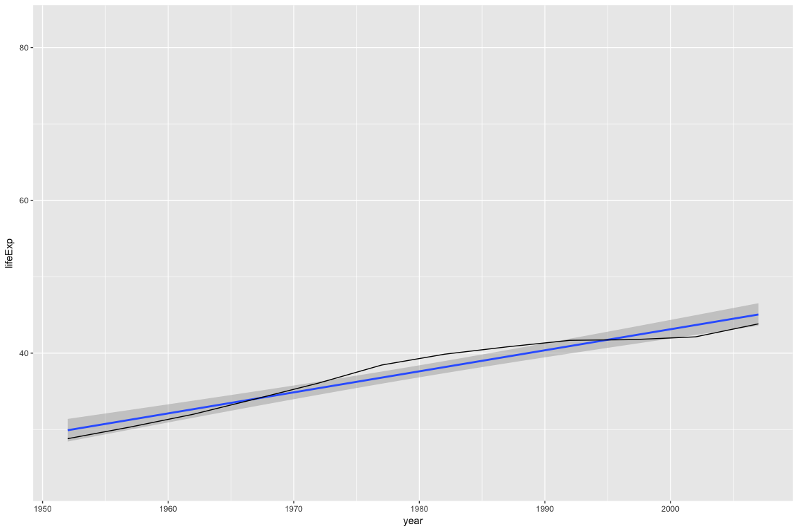

Cognostics are univariate statistics (or metrics) for a subset of data. When paired with the underlying data of visualizations, cognostics are a powerful tool for ordering and filtering the visualizations. add_panel_cogs() will automatically append cognostics for each plot player in a given panel column. The newly appended data can be fed into a trelliscopejs widget for easy viewing.
Installation
You can install autocogs from github with:
# install.packages("devtools")
devtools::install_github("schloerke/autocogs")Examples
Gapminder
library(autocogs)
#> [1] TRUE
library(tidyverse)
#> Loading required package: tidyverse
#> Loading tidyverse: ggplot2
#> Loading tidyverse: tibble
#> Loading tidyverse: tidyr
#> Loading tidyverse: readr
#> Loading tidyverse: purrr
#> Loading tidyverse: dplyr
#> Loading required package: magrittr
#>
#> Attaching package: 'magrittr'
#> The following object is masked from 'package:purrr':
#>
#> set_names
#> The following object is masked from 'package:tidyr':
#>
#> extract
#> Conflicts with tidy packages ----------------------------------------------
#> filter(): dplyr, stats
#> is_numeric(): purrr, autocogs
#> lag(): dplyr, stats
#> [1] TRUE
library(gapminder)
#> Loading required package: gapminder
#> [1] TRUE
# devtools::install_github("hafen/trelliscopejs")
# devtools::install_github("schloerke/trelliscopejs@autocogs")
library(trelliscopejs)
#> Loading required package: trelliscopejs
#> [1] TRUE
# Explore
p <-
ggplot(gapminder, aes(year, lifeExp)) +
geom_line(aes(group = country)) +
geom_smooth(method = "lm")
p
Looking at the plot above, most countries follow a linear trend: As the year increases, life expectancy goes up. A few countries do not follow a linear trend.
In the examples below, we will extract cognostics to aid in exploring the countries whose life expectancy is not linear.
trelliscopejs::facet_trelliscope()
ggplot(gapminder, aes(year, lifeExp)) +
geom_smooth(method = "lm") +
geom_line() +
trelliscopejs::facet_trelliscope(
~ country + continent,
nrow = 3, ncol = 6,
self_contained = TRUE,
state = list(
# set the state to display the country, continent, and R^2 value
# sorted by ascending R^2 value
sort = list(trelliscopejs::sort_spec("r2")),
labels = c("country", "continent", "r2")
)
)
#> using data from the first layer
# (screen shot of trelliscopejs widget)
trelliscopejs::trelliscope()
This is a full, start to finish example how automatic cognostics could be inserted into a data exploration workflow.
# Find a consistent y range
y_range <- range(gapminder$lifeExp)
## # Set up data and panel column
gapminder %>%
group_by(country, continent) %>%
# nest the data according to the country and continent
nest() %>%
mutate(
# create a column of plots with a
# * line
# * linear model
panel = lapply(data, function(dt) {
ggplot(dt, aes(year, lifeExp)) +
geom_smooth(method = "lm") +
geom_line() +
ylim(y_range[1], y_range[2])
})
) %>%
print() ->
gap_data
#> # A tibble: 142 x 4
#> country continent data panel
#> <fctr> <fctr> <list> <list>
#> 1 Afghanistan Asia <tibble [12 x 4]> <S3: gg>
#> 2 Albania Europe <tibble [12 x 4]> <S3: gg>
#> 3 Algeria Africa <tibble [12 x 4]> <S3: gg>
#> 4 Angola Africa <tibble [12 x 4]> <S3: gg>
#> 5 Argentina Americas <tibble [12 x 4]> <S3: gg>
#> 6 Australia Oceania <tibble [12 x 4]> <S3: gg>
#> 7 Austria Europe <tibble [12 x 4]> <S3: gg>
#> 8 Bahrain Asia <tibble [12 x 4]> <S3: gg>
#> 9 Bangladesh Asia <tibble [12 x 4]> <S3: gg>
#> 10 Belgium Europe <tibble [12 x 4]> <S3: gg>
#> # ... with 132 more rows
# Double check the plot worked...
# Look at the first panel (ggplot2 plot) of Afghanistan
gap_data$panel[[1]]
#!!!!!!!!!!
# Add cognostic information given the panel column plots
#!!!!!!!!!!
gap_data %>%
autocogs::add_panel_cogs() %>%
# double check it was added
print(width = 100) ->
full_gap_data
#> # A tibble: 142 x 10
#> country continent data panel `_smooth` `_lm`
#> <fctr> <fctr> <list> <list> <list> <list>
#> 1 Afghanistan Asia <tibble [12 x 4]> <S3: gg> <tibble [1 x 2]> <tibble [1 x 19]>
#> 2 Albania Europe <tibble [12 x 4]> <S3: gg> <tibble [1 x 2]> <tibble [1 x 19]>
#> 3 Algeria Africa <tibble [12 x 4]> <S3: gg> <tibble [1 x 2]> <tibble [1 x 19]>
#> 4 Angola Africa <tibble [12 x 4]> <S3: gg> <tibble [1 x 2]> <tibble [1 x 19]>
#> 5 Argentina Americas <tibble [12 x 4]> <S3: gg> <tibble [1 x 2]> <tibble [1 x 19]>
#> 6 Australia Oceania <tibble [12 x 4]> <S3: gg> <tibble [1 x 2]> <tibble [1 x 19]>
#> 7 Austria Europe <tibble [12 x 4]> <S3: gg> <tibble [1 x 2]> <tibble [1 x 19]>
#> 8 Bahrain Asia <tibble [12 x 4]> <S3: gg> <tibble [1 x 2]> <tibble [1 x 19]>
#> 9 Bangladesh Asia <tibble [12 x 4]> <S3: gg> <tibble [1 x 2]> <tibble [1 x 19]>
#> 10 Belgium Europe <tibble [12 x 4]> <S3: gg> <tibble [1 x 2]> <tibble [1 x 19]>
#> # ... with 132 more rows, and 4 more variables: `_x` <list>, `_y` <list>,
#> # `_bivar` <list>, `_n` <list>
# Display the panel and cognostics in a trelliscopejs widget
trelliscopejs::trelliscope(
full_gap_data, "gapminder life expectancy",
panel_col = "panel",
ncol = 6, nrow = 3,
auto_cog = FALSE,
self_contained = TRUE,
state = list(
# sort by ascending R^2 value (percent explained by linear model)
sort = list(trelliscopejs::sort_spec("r2")),
# display the country, continent, and R^2 value
labels = c("country", "continent", "r2")
)
)
#> Warning: Removed 4 rows containing missing values (geom_smooth).
#> Warning: Removed 8 rows containing missing values (geom_smooth).
# (screen shot of trelliscopejs widget)Custom Cognostics
-
add_cog_group()to add a custom cognostics group. -
add_layer_cogs()to call which cognostics groups should be executed for a given plot layer.
Using existing code from the autocogs package, we will add the univariate continuous cognostics group.
add_cog_group(
"univariate_continuous",
field_info("x", "continuous"),
"univariate metrics for continuous data",
function(x, ...) {
x_range <- range(x, na.rm = TRUE)
list(
min = cog_desc(x_range[1], "minimum of non NA data"),
max = cog_desc(x_range[2], "maximum of non NA data"),
mean = cog_desc(mean(x, na.rm = TRUE), "mean of non NA data"),
median = cog_desc(median(x, na.rm = TRUE), "median of non NA data"),
var = cog_desc(var(x, na.rm = TRUE), "variance of non NA data")
)
}
)We can then call the 'univariate_continuous' cognostics group whenever a geom_rug layer is added in a ggplot2 plot object using the code below.